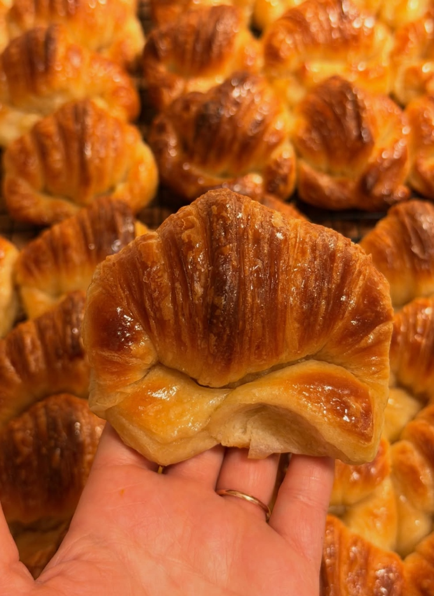

Artisan Argentine Medialunas Now in Copenhagen

There is nothing quite like the aroma of freshly baked Argentine medialunas in the morning. Golden, soft, flaky, and brushed with that unmistakable sweet syrup glaze, our artisan butter medialunas have officially arrived in Copenhagen.
The Secret of the Authentic Medialuna
Unlike a regular French croissant, the Argentine medialuna de manteca has a denser, brioche-like crumb, a delicate hint of vanilla and citrus, and a shiny almíbar glaze as soon as it comes out of the oven. Made entirely by hand with patience and real butter, they are the ultimate companion for mate, coffee, or a weekend breakfast with friends.
Order by the Dozen: Pick-up or Delivery
We bake on demand with 72 hours advance notice so you always receive them super fresh. You can order a dozen medialunas, combine them with our handmade dulce de leche alfajorcitos, and coordinate a free Pick-up or request delivery in Copenhagen.
Craving freshly baked medialunas?
Order your box now